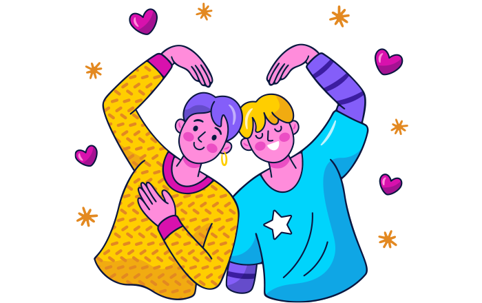

ชายไร้แขนจูงเพื่อนตาบอด ตระเวนปลูกต้นไม้นับหมื่นต้น
ชายไร้แขนจูงเพื่อนตาบอด ตระเวนปลูกต้นไม้ด้วยกันนับหมื่นต้น มิตรภาพที่งดงามและความสู้ชีวิตจนเกิดเป็นเรื่องราวชวนประทับใจ
ในขณะที่ใครหลายคนท้อแท้สิ้นหวังกับชีวิตที่ต้องเผชิญกับอุปสรรคนานาชนิด แต่ยังคงมีผู้คนอีกมากมายบนโลกที่เลือกจะเผชิญหน้าต่อความยากลำบากและก้าวเดินต่อไปอย่างไม่ท้อถอย ดังเช่นคู่หูชาวจีนคู่นี้ที่แม้ว่าจะมีอุปสรรคทางด้านร่างกายจนไม่สามารถหางานทำได้เช่นคนปกติ แต่ด้วยกำลังใจและมิตรภาพอันงดงามระหว่างพวกเขาก็ได้ก่อเหตุเกิดสิ่งมหัศจรรย์ขึ้น
เมื่อวันที่ 17 มีนาคม 2558 เว็บไซต์โอดดิตี้เซ็นทรัล ได้บอกเล่าเรื่องราวของ เจียไห่ซา และ เจียเหวินชี สองคู่หูที่ฝ่ายหนึ่งตาบอดและอีกฝ่ายไร้แขน ซึ่งได้ช่วยเหลือเกื้อกูลทำหน้าที่เป็นมือและแขนให้กันและกัน และช่วยกันปลูกต้นไม้มากว่า 10,000 ต้นแล้วตลอดช่วง 10 ปีที่ผ่านมา
มิตรภาพที่สวยงามนี้เกิดขึ้นเมื่อชายทั้ง 2 คนไม่สามารถหางานทำได้ตามปกติเนื่องจากความพิการทางร่างกายของพวกเขา โดยเจียไห่ซาเกิดมาพร้อมโรคต้อกระจกที่ทำให้ตาซ้ายมองไม่เห็น จากนั้นในปี 2543 เขาก็สูญเสียการมองเห็นที่ตาขวาจากอุบัติเหตุในการทำงาน ขณะที่เจียเหวินชีต้องสูญเสียแขนทั้ง 2 ข้างไปจากอุบัติเหตุขณะมีอายุเพียง 3 ขวบ
จากนั้นทั้งคู่ที่ต่างพยายามหาหนทางในการเลี้ยงชีพก็ได้มาพบกันในปี 2544 เจียไห่ซาและเจียเหวินชีเล็งเห็นแล้วว่าการปลูกต้นไม้นั้นสามารถสร้างรายได้ให้แก่พวกเขาได้ ทั้งยังเป็นประโยชน์ต่อคนในรุ่นถัด ๆ ไปด้วย พวกเขาจึงได้ดำเนินการขอเช่าพื้นที่ริมฝั่งแม่น้ำของหมู่บ้าน ซึ่งตั้งอยู่ที่มณฑลเหอเป่ย ทางตอนเหนือของจีนเพื่อเริ่มกิจการเล็ก ๆ และโชคดีที่ผู้นำหมู่บ้านทราบดีถึงฐานะทางการเงินของทั้งคู่ จึงตัดสินใจยกเว้นค่าเช่าที่ของพวกเขา
ในแต่ละวัน เจียไห่ซาและเจียเหวินชีจะต้องออกจากบ้านในเวลา 07.00 น. หยิบค้อนและแท่งเหล็กเดินทางข้ามแม่น้ำที่มีกระแสน้ำไหลเชี่ยวไปยังพื้นที่เพาะปลูกของพวกเขา เจียเหวินชีจูงสหายตาบอดของเขาออกไปตัดเก็บกิ่งไม้มาเพาะชำ เนื่องจากไม่มีเงินพอจะซื้อต้นกล้า จากนั้นเจียไห่ซาก็จะค่อย ๆ นำกิ่งที่เก็บได้มายังพื้นดินแข็ง ๆ เพื่อขุดหลุมปลูก โดยมีเจียเหวินชีคอยรถน้ำต้นไม้ ซึ่งแม้ว่าการทำงานของ 2 สหายจะเป็นไปอย่างเชื่องช้าและค่อยเป็นค่อยไป แต่พวกเขาก็ได้ทำงานเหล่านี้มาเป็นเวลานานร่วม 10 ปี ปลูกต้นไม้กว่า 10,000 ต้นแล้ว ซึ่งเป็นจำนวนที่มากเกินกว่าคนที่มีร่างกายสมบูรณ์จะทำได้ตลอดทั้งชั่วชีวิตเสียอีก
ทั้งนี้เจียไห่ซาได้เผยถึงความรู้สึกของเขาว่า แม้ว่าพวกเขาจะไม่ถึงกับประสบความสำเร็จนักในช่วงเวลาที่ผ่านมา แต่อย่างน้อยพวกเขาก็ได้พยายามแล้ว ขณะที่เจียเหวินชีชี้ว่า พวกเขาสามารถยืนอยู่ได้บนลำแข้งของตัวเอง ผลดอกที่เกิดจากความพยายามนั้นหอมหวานกว่าเสมอ แม้ว่าพวกเขาจะไม่ได้ร่ำรวยแต่ก็มีความสงบสุขในหัวใจดี